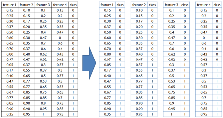
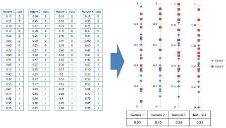
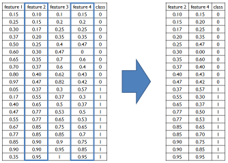
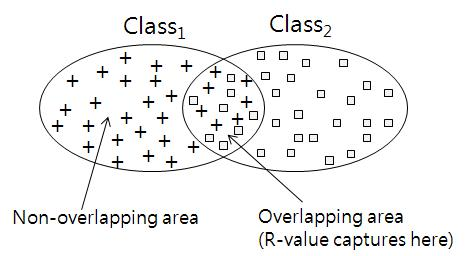

|
1. Introduction
Feature selection is one of the most important issues in classification, and is particularly relevant in the context of microarray datasets with thousands of features, most of which are likely to be uninformative.
Here, we propose a new efficient feature selection method based on the R-value. The original R-value was designed to evaluate the entire dataset, but we also found that it could be applied to the feature selection task using the modified R(D). The R-value-based feature selection (RFS) method scores the overlapping areas of each feature in candidate features, and then selects features that have low R-value. Proposed idea is simple, but powerful for feature selection.
- Step 1. Separate total data into a single feature

- Step 2. Calculate R-value for each single feature

- Step 3. Generate new data-set by choosing features which have small R-value


Figure1. Concept of R-value
** 3 types of R-value
- R-value between two categories (Figure 2(a))
- R-value of a category (Figure 2(b))
- R-value of a whole dataset (Figure 2(c))
2. Usage
3. Download
rvalue_test.R
RvalueLib.r
4. Citation Request:
Jimin Lee, Batnyam Nomin and Sejong Oh*, RFS: Efficient feature selection method based on R-value, Comput. Biol. Med. (2012) (Article in press),
http://dx.doi.org/10.1016/j.compbiomed.2012.11.010
|